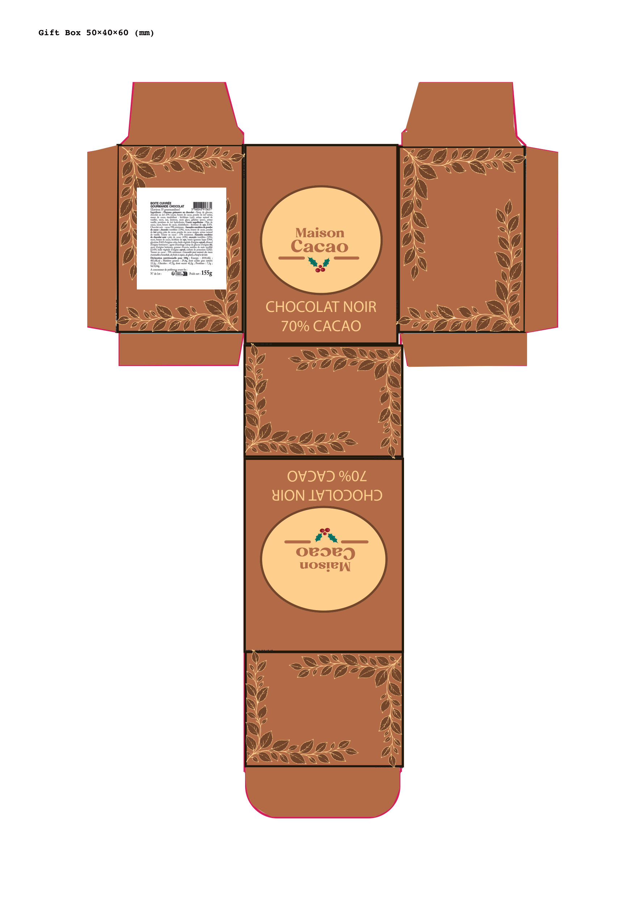
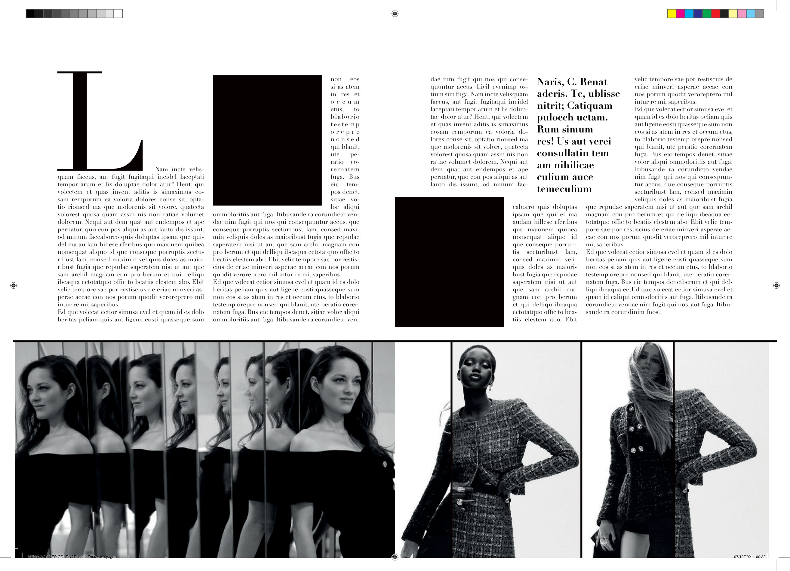

4 semaines
Portfolio 2026–2027
Leïna Martin
Élève en 1ère Bac Pro RPIP
Graphisme & PAO
Je transforme une idée en support imprimé clair, harmonieux et prêt à produire.
01
Identité visuelle
02Packaging
03Mise en page éditoriale
Mon parcours
De la communication visuelle à la chaîne graphique
Après une première approche de la communication visuelle plurimédia, je poursuis aujourd’hui ma formation en Bac Pro RPIP au lycée Stéphane Hessel à Toulouse.
Je m’intéresse à toutes les étapes qui permettent de passer d’une intention créative à un document imprimé : recherche graphique, composition, préparation des fichiers et contrôle prépresse.
La PAO me plaît pour son équilibre entre créativité et précision technique. J’aime organiser l’information, choisir les bonnes formes et préparer un résultat cohérent jusque dans les détails.
Recherche de stages
Deux périodes pour découvrir le métier sur le terrain
Je recherche une entreprise dans le domaine de l’impression, du graphisme, de la signalétique ou de la communication visuelle.
Télécharger la lettre de motivation (PDF)4 semaines
Portfolio
Projets sélectionnés

Voir le projetBOHOCOLAT
Conception d’une boîte cadeau pour un chocolat artisanal : identité visuelle, gabarit technique et préparation du fichier d’impression.
- Packaging
- Identité visuelle
- Prépresse

Voir le projetMagazine Noir & Blanc
Reproduction et maquettage d’une double page éditoriale : grille de composition, hiérarchie typographique et traitement des visuels.
- Mise en page
- Typographie
- Édition
À suivre
Prochains projets…
De nouvelles réalisations en graphisme, PAO et production imprimée viendront bientôt compléter cette sélection.
Contact
Échangeons autour d’un stage
Disponible pour présenter mon parcours, mes projets et ma motivation.
LocalisationToulouse / Longages
StatutInterne à Toulouse